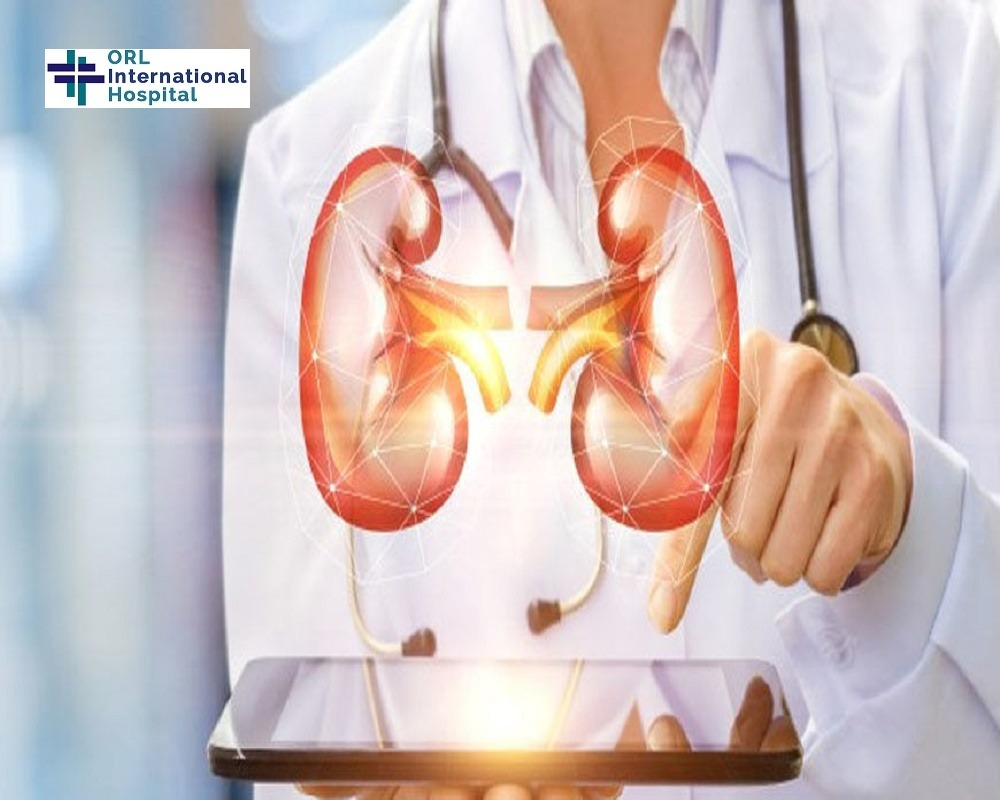

24x7 Receptionist
+919311449825Nephrology is one of the most important medical specialties because your kidneys play a major role in keeping your body healthy. Whether you are facing frequent urine problems, swelling in your feet, or have high blood pressure, a nephrologist helps diagnose and treat kidney-related diseases before they become serious. This guide will help you understand everything about nephrology treatment in a simple, clear, and informative way.
What Is Nephrology?
Nephrology is a branch of medicine that focuses on the kidneys and the diseases that affect them. It includes the diagnosis, treatment, and long-term care of kidney conditions such as kidney failure, kidney stones, infections, and more.
The goal of nephrology is to keep your kidneys functioning properly and prevent complications that can affect your heart, nerves, and overall health.
What Is a Nephrologist?
A nephrologist is a kidney specialist / Kindey Doctor . They are trained to diagnose and treat all types of kidney diseases, manage complications, and support patients who have kidney damage or kidney failure. Nephrologists understand how the kidneys work, how diseases affect them, and what treatments can help protect, improve, or restore kidney function.
What Problems Do Nephrologists Treat?
Nephrologists deal with a wide range of kidney-related problems such as:
-
Difficulty urinating
-
Swelling in hands, feet, or face
-
Sudden rise in blood pressure
-
Repeated kidney infections
-
Kidney stones
-
Electrolyte imbalance (sodium, potassium disorders)
-
Diabetic or hypertension-related kidney damage
-
Chronic Kidney Disease (CKD)
What Does a Nephrologist Do?
A nephrologist performs the following duties:
-
Diagnoses kidney diseases through tests (blood tests, urine tests, ultrasounds).
-
Plans personalized treatment depending on the severity of the disease.
-
Manages conditions like diabetes and blood pressure to protect kidneys.
-
Provides dialysis treatment if the kidneys stop working.
-
Prepares and manages patients for kidney transplant.
-
Provides long-term follow-up and lifestyle guidance.
What Conditions Do Nephrologists Treat?
Nephrologists treat all types of kidney and urinary system disorders, including:
-
Kidney Failure (AKI & CKD)
-
Kidney Stones
-
Glomerulonephritis (inflammation of kidney filters)
-
Polycystic Kidney Disease (PKD)
-
Diabetic Kidney Disease
-
Hypertensive Kidney Damage
-
Urinary Tract Infections (recurrent)
-
Proteinuria (protein in urine)
-
Hematuria (blood in urine)
-
Nephrotic Syndrome
-
Electrolyte Disorders
Treatments & Procedures in Nephrology
Nephrology offers both medical and advanced treatment options such as:
1. Medication-Based Treatment
To manage infections, high blood pressure, or inflammation.
2. Dialysis
For patients whose kidneys cannot filter blood.
Types:
-
Hemodialysis
-
Peritoneal Dialysis
3. Kidney Transplant
In cases of complete kidney failure, nephrologists prepare and guide patients through transplant.
4. Kidney Biopsy
A small tissue sample is taken to diagnose exact kidney conditions.
5. Fluid & Electrolyte Management
Helps balance essential minerals like potassium and sodium.
6. Lifestyle & Diet Management
Includes salt control, hydration guidance, and diabetes/blood pressure management plans.
What Organs Are Treated by a Urologist vs Nephrologist?
This is a common point of confusion:
Nephrologist Treats:
-
Kidneys (function, filtering, diseases)
-
Long-term conditions like CKD, dialysis, transplant care
Urologist Treats:
-
Urinary tract organs: bladder, ureters, urethra
-
Kidney stones (surgical removal), prostate, urinary infections (structural problems)
In simple terms:
A nephrologist treats kidney diseases. A urologist treats urinary tract and surgical problems.
Symptoms to Consult a Nephrologist
For Men:
-
Frequent urination at night
-
Swelling in legs or around eyes
-
Sudden rise in blood pressure
-
Blood in urine
-
Persistent back/flank pain
-
Difficulty passing urine
For Women:
-
Recurrent UTIs
-
Foamy urine
-
Swelling in feet or face
-
Unexplained fatigue
-
Changes in urine color or smell
-
Severe cramps or pelvic discomfort
If you notice any of these symptoms, it’s best to get your kidneys checked early.
What Kind of Diseases Do Nephrologists Treat?
Nephrologists handle diseases related to:
-
Kidneys
-
Kidney filters (glomeruli)
-
Kidney blood vessels
-
Electrolytes and minerals
-
Acid–base imbalance
-
High blood pressure
-
Fluid retention
-
Urinary problems linked to kidney health
Subspecialty Areas of Nephrology
Nephrology includes several specialized branches:
-
Interventional Nephrology
-
Pediatric Nephrology
-
Critical Care Nephrology
-
Onconephrology (cancer-related kidney issues)
-
Transplant Nephrology
-
Dialysis Care & Management
-
Preventive Nephrology
What Can I Expect From a Nephrology Visit?
A typical nephrology visit includes:
-
A detailed discussion of your symptoms and medical history
-
Physical examination
-
Blood and urine tests
-
Ultrasound or imaging tests
-
Treatment plan based on diagnosis
-
Diet and lifestyle guidance
-
Regular follow-ups to track kidney health
Your nephrologist ensures you fully understand your condition and treatment options.
What Is the Recovery Time for Nephrology Surgery?
Recovery depends on the type of treatment:
-
Kidney Stone Removal: 1–2 weeks
-
Dialysis Access Surgery: 1–4 weeks
-
Kidney Transplant: 6–12 weeks with regular follow-ups
-
Minor Procedures (biopsy): 24–48 hours
Your doctor will provide a personalized recovery plan based on your health condition.
Schedule Your Appointment & Protect Your Kidney Health with Nephrology Treatment
Nephrology plays a vital role in protecting one of the body’s most important organs — the kidneys. Early diagnosis, proper treatment, and regular follow-ups with a nephrologist can prevent serious complications and ensure healthier kidney function. Whether you are experiencing urinary issues, swelling, high blood pressure, or long-standing diabetes, consulting a nephrologist at the right time can save you from major health risks.
A nephrologist is a kidney specialist who diagnoses and treats kidney diseases, manages complications, and guides patients with kidney damage or kidney failure. They understand how kidneys function, how various conditions affect them, and provide treatments to protect or restore kidney health. From early diagnosis to long-term care, nephrologists play a vital role in maintaining overall kidney function and preventing serious complications.

Fill Out The Form Details Given Below To Connect With Our ORL Hospital For General Enquiry, Sugggestions, Feedback And More...
Send Email On
drdhirendrasinghent@gmail.comOur Address
Plot No. 89, Pocket 1, Jasola Vihar, New Delhi, Delhi - 110025.Download Our Package
Fill This Enquiry Form